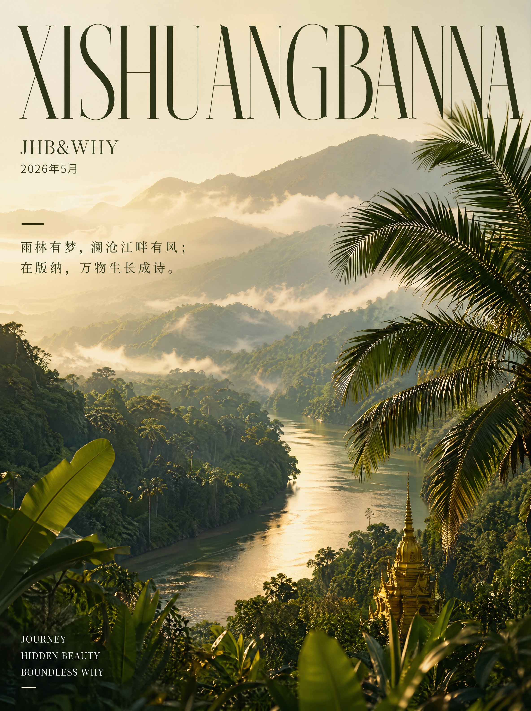
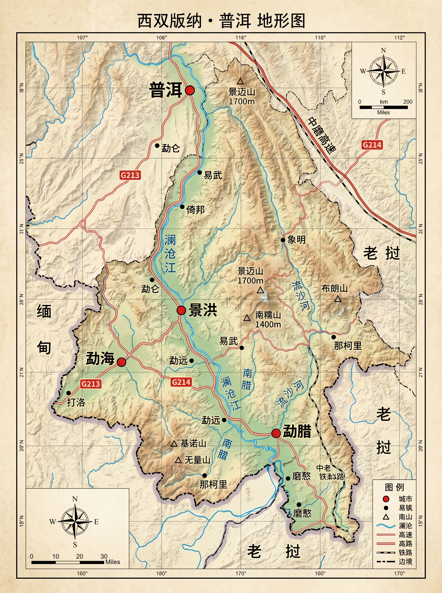
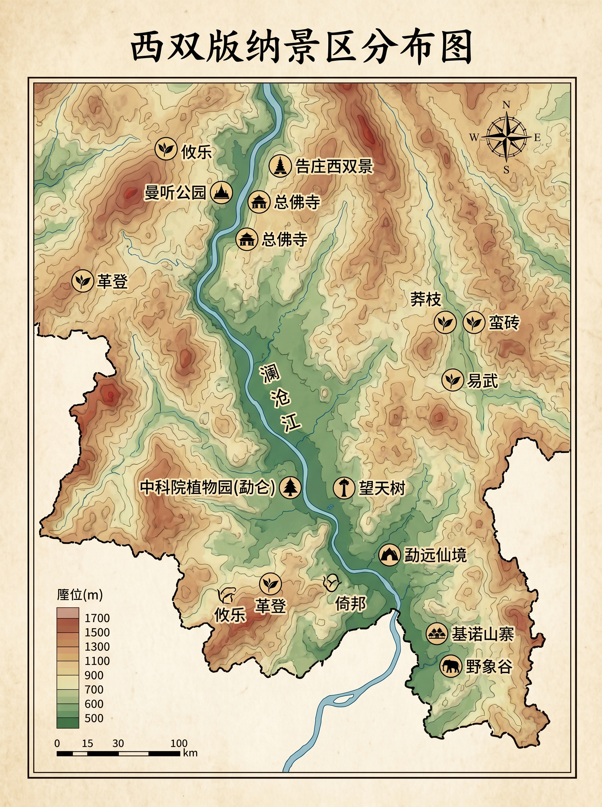
告庄夜市烤五花 — 炭火慢烤，配傣味蘸水（干碟辣椒面+香柳）
泡鲁达 — 炼乳+椰丝+西米+面包干+冰水，版纳的夏夜标配
西双版纳的对外交通经历了三个时代：水路时代，澜沧江是唯一通道，顺流到老挝、泰国；公路时代，1950 年代修通昆洛公路（昆明-打洛），结束了"入版纳难于上青天"的历史；航空时代，嘎洒机场 1990 年通航，如今是云南第二繁忙机场。而 2021 年中老铁路通车，开启了第四个时代——你们 Day 7 将亲身体验。
"告庄"是傣语，意为"九塔十二寨"。景区虽然是现代重建，但其布局遵循了傣族传统城市规划——以佛塔为中心，寨子围塔而建。大金塔的设计融合了南传佛教的宇宙观：塔身象征须弥山，四面台阶代表四大部洲，塔尖指向天界三十三天。夜晚灯光亮起时，金塔倒映在水面，这个构图本身就是佛教"水月观"的视觉化。
出发前/飞机上/到达后，各写一段此刻的心情。
今天最想记住的一个画面——
包烧猪肉 — 芭蕉叶包裹猪肉末+香料，炭火烤至焦香
酸笋鸡 — 傣族酸笋的发酵鲜味与鸡肉的甜味碰撞
1959 年，植物学家蔡希陶受中科院派遣，在版纳考察选址。他选中勐仑的原因极具地理学思维：勐仑位于罗梭江（澜沧江支流）环抱的葫芦岛上，三面环水形成天然围栏；北纬 21°41′，是中国大陆热带的北缘极限——这意味着这里既能培育热带植物，又能研究热带与亚热带的过渡地带，科研价值最大化。
在总佛寺，你可能看到僧人翻阅一种狭长的"书页"——那是贝叶经，傣族最古老的文字载体。制作过程本身就是一件艺术品的诞生：采贝多罗棕榈叶，水煮软化，压平阴干，再用铁笔逐字刻写傣文经文，最后涂墨擦拭让字迹显现。一部经书可保存数百年。总佛寺至今藏有大量贝叶经原件，是傣族的"纸上图书馆"。
在植物园西区，收集落叶、落花或种子，粘贴于此。请勿摘取活体植物。
今天最想记住的一个画面——
雨林大餐 — 向导在溪边现做：竹筒饭 + 烤鸡 + 野菜汤 + 舂鸡脚
蜂蛹 — 如果向导找到蜂巢，蛋白质炸弹，酥脆鲜香
你脚下的雨林不是一片平面森林，而是一座五层"立体城市"——涌现层（50-80m，望天树等巨木突破冠层）；冠层（25-45m，光合作用主力，鸟类天堂）；亚冠层（15-25m，小乔木和棕榈）；灌木层（5-15m，耐阴植物）；地被层（0-5m，蕨类、苔藓、落叶）。阳光从顶部到底部只剩 2%，这就是为什么雨林地面总是幽暗潮湿。
基诺族是中国最后一个被官方确认的民族（1979 年），世居于版纳基诺山。他们的创世神话说：远古洪水灭世后，兄妹二人藏在一面大鼓中漂浮求生，鼓在基诺山搁浅，兄妹繁衍出基诺族人。至今，"大鼓"是基诺族最神圣的器物——每年"特懋克节"（打铁节）上，全寨击鼓三天，鼓声是祖先的心跳。如果你在雨林中听到远处的鼓声，那可能是附近基诺寨正在举行仪式。
规则：各自独立作答，写完再翻开对方的答案！
这趟旅行到目前为止，最好吃的一样东西？
对方在旅途中最让你意外的一个瞬间？
如果只能带一样纪念品回去？
用一种版纳的植物或动物形容对方？
今天最想记住的一个画面——
傣味鱼宴 — 勐远仙境附近农家，鲜鱼配酸汤
麻黑头春茶 — 4 月底刚采完，蜜香+柔滑+回甘长，茶农免费品饮
清代普洱茶的核心产区"古六大茶山"（攸乐、革登、倚邦、莽枝、蛮砖、易武）全部分布在澜沧江东岸。这不是巧合，而是地形+水系+贸易路线的必然：东岸山势较缓，适宜种茶；澜沧江支流众多，便于运输；最关键的是——茶马古道从易武出发北上，经思茅、大理到拉萨，这条路线沿东岸山脉走最省力。地形，决定了产业。
走在易武老街，抬头看那些斑驳的门楣——"同兴号"、"宋聘号"、"福元昌"、"车顺号"——每一块匾额背后都是一个家族的百年起落。宋聘号始于光绪年间，其圆茶曾是贡品，如今一饼存世老茶拍卖价超百万。车顺号的创始人车顺来是易武第一位贡生，他把读书人的规矩带进制茶——选料严苛、工序不减。这些商号的字体风格也值得细看：有的用楷书彰显正统，有的用行书暗示潇洒。
在麻黑寨品茶时记录。闻、看、品，各写一个词或一句话。
| JHB | WHY | |
|---|---|---|
| 干茶香气 | ||
| 汤色 | ||
| 第一口 | ||
| 回甘 | ||
| 体感/整体 |
今天最想记住的一个画面——
勐海汤锅 — 途经勐海，牛肉汤锅一绝
景迈古树茶 — 大平掌现采现冲，兰花香+山野气
布朗族烤粑粑 — 翁基寨子里买，糯米+芭蕉叶烤制
景迈山古茶林 2023 年入选世界文化遗产，是全球首个茶主题遗产。申遗历时 13 年，以"文化景观"类别申报——评审不仅看茶树本身，更看人与茶林的互动关系。最具争议的决策：坚持不铺柏油路。专家认为沥青会改变土壤温度，影响茶叶品质。为了景观完整性，当地牺牲了旅游便利性——这正是申遗成功的关键。
糯干是傣族寨，翁基是布朗族寨，相距仅 20 分钟车程，建筑风格却截然不同。傣族竹楼：架空底层（防潮防蛇）、竹编墙体（通风透光）、金色屋顶（象征佛光），轻盈如蝴蝶展翅。布朗族木屋：实木承重墙（保暖隔风）、黑灰瓦片（融入山林）、低矮屋檐（抵御山风），沉稳如大地生长。一个向天，一个向地——两种回应自然的方式。
画下糯干和翁基各自的建筑轮廓，标注你观察到的材质和细节。
昨天的麻黑，今天的景迈大平掌——两座山头，两种性格。
| 麻黑（Day 4） | 景迈（Day 5） | |
|---|---|---|
| 香气 | ||
| 口感 | ||
| 回甘 | ||
| 你更喜欢 | ||
菊花普洱火腿鸡汤锅 — 普洱特色，鲜花+茶+火腿同锅
马帮宴 — 那柯里驿栈，腊肉+土鸡+野菜，马帮路上的伙食
茶马古道不是一条路，而是一个路网。从易武出发有三条干线：滇藏线（易武→思茅→大理→德钦→拉萨，约 4,000km）；滇川藏线（经四川进藏）；滇缅印线（经缅甸到印度）。你们经过的那柯里是滇藏线上的重要驿站——马帮从思茅出发后的第一个过夜点。
芒景的蜂神树高约 50 米，树冠悬挂 70 多个野蜂巢，像天然"空中城市"。布朗族人从不取蜂蜜——他们相信蜂群是森林之神派来守护茶山的卫兵。每年祭茶祖时，寨老先拜蜂神树，感谢蜂群为茶花授粉。这种信仰恰恰暗合现代生态学——蜜蜂确实是茶树最重要的授粉者。信仰与科学，在这棵树上达成了和解。
倒数第二天，回顾这趟旅程——
最想重来一次的是哪一天？
这趟旅行让你发现了对方的什么新特点？
下次旅行最想去哪里？
普洱汽锅鸡 — 思茅午餐推荐，蒸汽凝结的原汤鲜美至极
江城烤鱼 — 普洱另一特色，香茅+小米辣的边境风味
中老铁路 2021 年通车，全长 1,035 公里，167 座隧道、301 座桥梁，桥隧比 87%——几乎在山体里"穿"出来的铁路。它打破了老挝"陆锁国"的困境，也让中国获得了通往东南亚的陆路大动脉。普洱到景洪 55 分钟，马帮曾需 3 天。
留意手工艺品店里的傣陶——带着粗糙手感、颜色不均的陶器，是傣族延续千年的"慢轮制陶"。与景德镇快轮不同，傣族制陶用脚踩慢轮，转速极低，全靠双手拍打塑形。不上釉，稻壳堆烧而非窑烧，温度仅 800°C。每件作品都带着火焰的随机印记和手掌的温度——这不是"落后"，而是拒绝标准化的美学选择。
七天走完，各写一段给这趟旅行的结语。
| 中文 | 傣语发音 | 场景 |
|---|---|---|
| 你好 | 萨瓦迪（sa wa di） | 打招呼 |
| 谢谢 | 银蒂（yin di） | 表示感谢 |
| 好吃 | 拉目威（la mu wei） | 夸食物 |
| 多少钱 | 嘎得刀（ga de dao） | 买东西 |
| 太辣了 | 贝马来（bei ma lai） | 求助 |
| 干杯 | 水水（shui shui） | 喝酒 |
| 版纳旅游投诉 | 0691-12345 |
| 景洪市人民医院 | 0691-2122553 |
| 勐腊县人民医院 | 0691-8122284 |
| 报警 | 110 |
| 急救 | 120 |
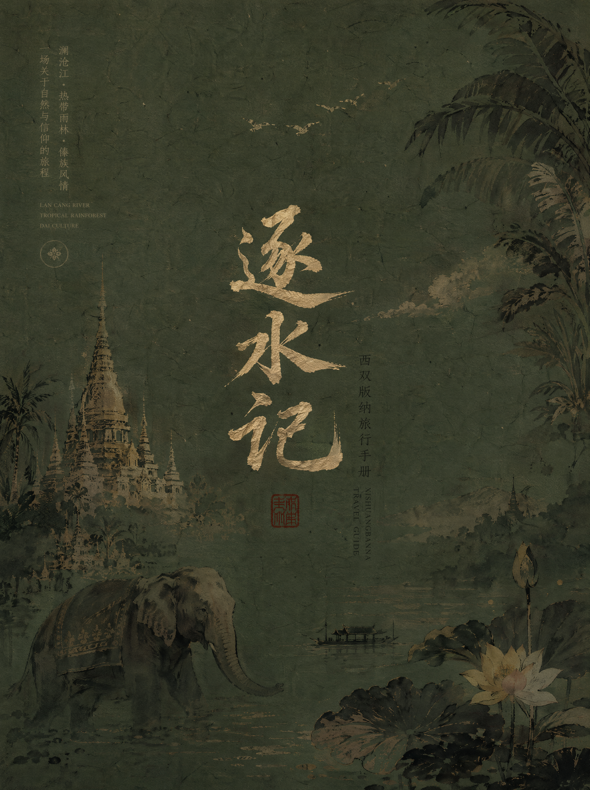
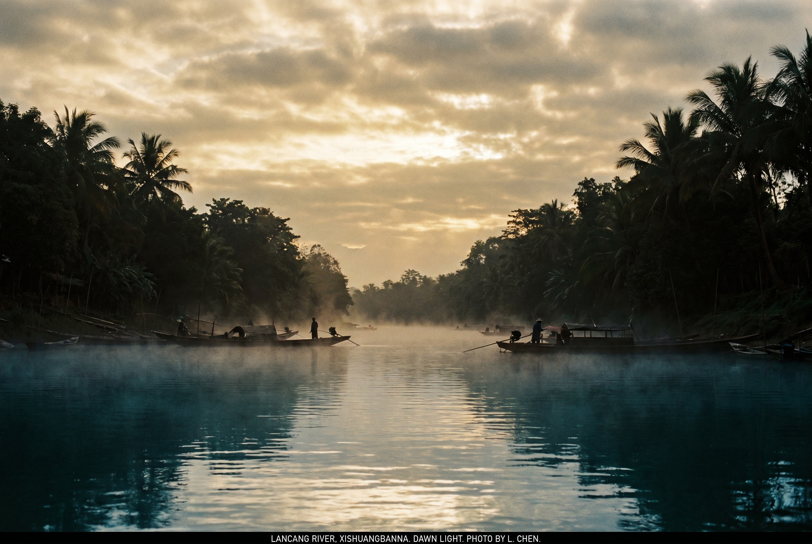
在中国境内，它叫澜沧江——这个名字本身就藏着故事。"澜沧"来自傣语"兰掌"，意为"百万大象"，指的是沿江两岸曾经象群遍布的壮阔景象。而在它流出国境的那一刻，名字变成了湄公河（Mekong），这个词同样来自傣泰语系，"Mae"是母亲，"Khong"是水——母亲河。一条河，两个名字，从百万大象到母亲之水，恰好概括了它从野性到滋养的性格转变。
你们抵达景洪的第一个夜晚，在告庄星光夜市的露台上，脚下流过的就是这条河。此刻它的海拔约 550 米，已经从上游 5,000 米的高原一路俯冲下来。这个海拔恰好是一条隐形分界线——热带与亚热带在此交接。北纬 21°，往北几十公里就看不到成片的热带雨林了。地理学上，这叫"热带北缘"，也正是西双版纳之所以特殊的根本原因。
澜沧江从青海唐古拉山发源，经西藏、云南南下，然后以"湄公河"的身份流经缅甸、老挝、泰国、柬埔寨、越南，最终汇入南海。六个国家，六种政治制度，六套法律体系，共享一条河的水。这种"跨境水资源"问题是当今国际政治中最敏感的议题之一——上游修水电站会影响下游渔业、农业和生态，而澜沧江-湄公河流域的 60 多座水电站，正是中国与东南亚国家关系中绕不开的话题。
但在版纳，水的意义远远超越了政治。对傣族人来说，水是生命的起点和终点。傣族的村寨几乎全部沿江而建——不是因为交通便利（那是附带的好处），而是因为南传佛教认为水是最纯净的元素，能洗去罪孽、带来重生。
泼水节（傣历新年，每年 4 月中旬）就是这种信仰的最高表达。它的正式名称叫"桑堪比迈"，意为"太阳回到金牛座的日子"。节日第一天叫"宛麦"（送旧），最后一天叫"宛帕雅宛玛"（迎新）。泼水不是泼着玩——第一瓢水要泼向佛像，为佛"洗尘"；第二瓢水泼向长辈，是祝福；之后才是年轻人互相泼水的狂欢，而水泼得越多，祝福越多。整个仪式的核心逻辑是：旧年的不净被水冲走，新年的干净从水中诞生。
你们的行程始于一条江畔的夜市，终于一列沿江而建的铁路。七天里，你们溯溪、品茶、穿过地下暗河、沿着澜沧江的支流到达植物园——水，一直是暗线。傣族人说"有水就有鱼，有鱼就有傣"。而你们这趟旅行，也可以说是一场"逐水"之旅——逐着这条河流的方向，走进它千百年来滋养的土地与文化。
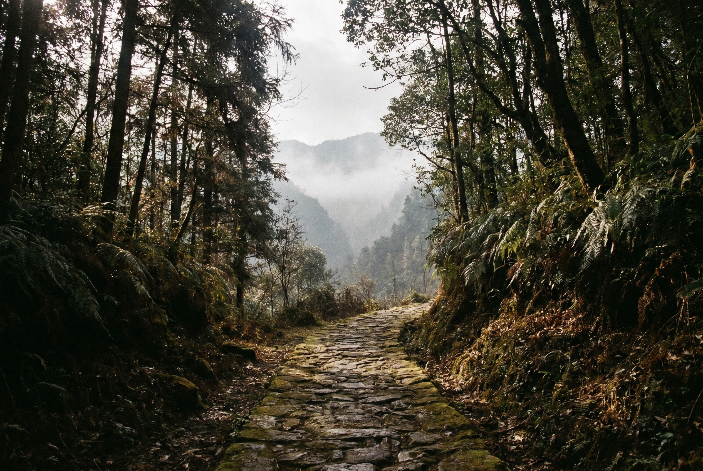
茶马古道不是一条路，而是一张网。从唐代开始，云南的茶叶经由马帮运往西藏、四川和东南亚，形成了三条主要干线：滇藏线（易武→思茅→大理→丽江→德钦→拉萨）、滇川线（经四川雅安入藏）和滇缅线（经缅甸通往印度和东南亚）。其中滇藏线全长约 4,000 公里，马帮走完全程需要三到四个月。
马帮是一种高度组织化的商业形态。领头的叫"马锅头"（锅头——因为他掌管马帮的"锅"即伙食），相当于 CEO。马锅头有一套不成文的江湖规矩：不走夜路（防匪），不在岔路口歇脚（怕迷路），不在桥头扎营（怕涨水），遇到对面来的马帮必须让路给上坡方（下坡方刹车更容易）。这些规矩听起来是迷信，其实都是用血的教训换来的安全规程。
你们 Day 6 要去的那柯里古镇，就是茶马古道滇藏线上的第一个驿站——从思茅（普洱）出发后的第一个过夜点，相当于今天高速公路上的"服务区"。驿站里至今保留着马帮的拴马桩、饮马槽和石板路上的马蹄印。晚餐的"马帮宴"（腊肉、土鸡、野菜）也是当年马帮路上的标准伙食。
赶马调是马帮文化最动人的遗产。这种即兴山歌在马帮行进中吟唱，既是解闷，也是通讯——前队唱一句，后队接一句，通过歌声确认队伍完整、路况安全。"赶起骡马进茶山，山高路窄雾弥漫。骡马驮着普洱茶，一程一程到远方。"这种旋律的节奏和马蹄的节奏暗合，走着走着就唱了起来，唱着唱着就走了千里。
民国时期，滇缅公路（昆明-畹町）的修通第一次让汽车取代了部分马帮路线。但真正终结马帮时代的是 1950 年代修通的昆洛公路（昆明-打洛），版纳从此接入了中国的公路网。嘎洒机场 1990 年通航，让版纳进入了航空时代——你们从上海出发 4 小时即达，在马帮时代需要数月。
而 2021 年 12 月 3 日通车的中老铁路，开启了第四个时代。这条铁路全长 1,035 公里（中国段 508 公里、老挝段 414 公里），修建难度极大：167 座隧道、301 座桥梁，桥隧比高达 87%。工程师们几乎是在横断山脉的肚子里"穿"出了一条钢铁通道。你们 Day 7 搭乘的普洱到景洪这一段，55 分钟穿越的山体隧道群，马帮曾经要走三天三夜。
地缘政治层面，中老铁路的意义更为深远。老挝是东南亚唯一的内陆国，长期因为没有出海口而受制于邻国。这条铁路让老挝从"陆锁国"（land-locked）变成了"陆联国"（land-linked），货物可以经昆明通往中国全境，也可以从万象南下连接泰国铁路网。一条铁路，改写了一个国家的地缘命运。
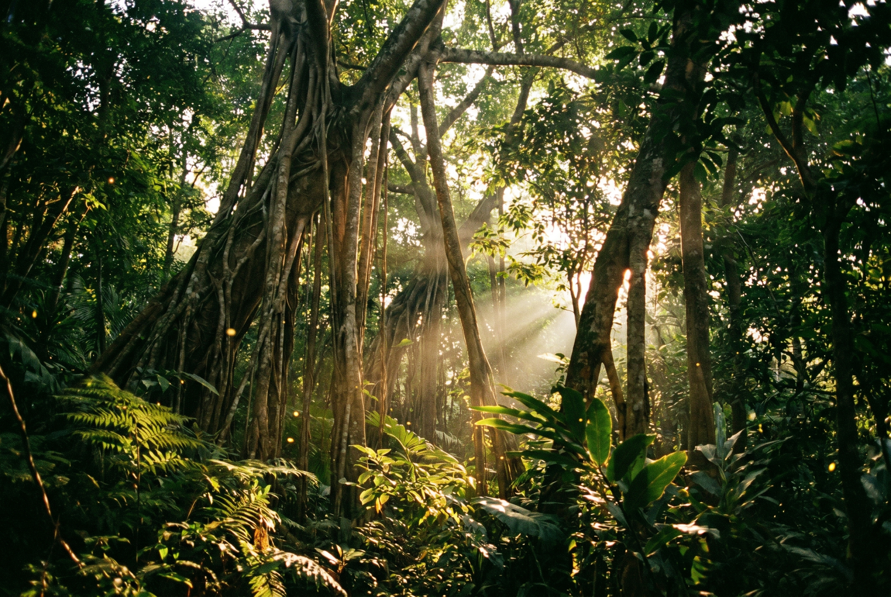
西双版纳的存在，在地理学上几乎是一个异常值。北回归线（北纬 23°26′）穿过的地区，由于受副热带高压控制，大多数是干旱景观。但印度洋暖湿气流沿着横断山脉的"通道"直灌而入，加上澜沧江水系的调节，让版纳成了"北回归线沙漠带上唯一的绿洲"。这个地理奇迹的关键在于地形：横断山脉南北走向，恰好为暖湿气流打开了一扇"门"。
走进雨林，你进入的不是一片平面的森林，而是一座五层的"立体城市"。最顶层是涌现层（50-80 米），望天树等巨木像摩天大楼一样突破冠层，独自承受暴风雨和烈日。第二层是冠层（25-45 米），这是雨林的"屋顶"，密不透光，90% 的光合作用发生在这里，也是鸟类和灵长类的天堂。第三层是亚冠层（15-25 米），小乔木和棕榈在大树的阴影下生长。第四层是灌木层（5-15 米），耐阴植物的领地。最底层是地被层（0-5 米），蕨类、苔藓、落叶在这里分解，阳光只剩下不到 2%。
绞杀榕是雨林中最具戏剧性的物种。它的种子被鸟类带到其他大树的枝杈上发芽，然后从树冠向下伸出气生根，一根一根地包裹宿主树干，最终将宿主完全"勒死"——而绞杀榕自己站在宿主的位置上，成了新的大树。这个过程可以持续几十年，生态学家称之为"竞争排斥"的极端案例。在植物园的榕树园里，你能看到各个阶段的绞杀过程。
但为什么版纳的雨林能保存至今？除了气候和地形的先天条件，傣族的"龙山"制度起了关键作用。傣族传统中，每个村寨附近都有一片"龙山林"——被认为是龙神居住的圣山。龙山林中严禁砍伐、狩猎、甚至大声喧哗，违者会被全寨惩罚。这种宗教禁忌实际上构成了一套自发的生态保护制度——几百年前，傣族人就用信仰的方式做了今天政府用法律才能做到的事。
基诺族的创世神话则从另一个角度诠释了人与雨林的关系。基诺族相信，远古时洪水滔天，兄妹二人藏进一面巨大的木鼓中，随洪水漂流，最终搁浅在基诺山上。兄妹繁衍后代，成为基诺族的祖先。因此，大鼓是基诺族最神圣的器物，而树（制鼓的原材料）是生命的根源。每年二月的"特懋克节"（打铁节），全寨在最大的太阳鼓前击鼓三天——鼓声是祖先的心跳，也是雨林的呼吸。
夜幕降临后，雨林变成了另一个世界。你们在植物园夜游时会进入一个"声景"——蛙鸣、蝉鸣、风穿过叶片的沙沙声，层次分明。生态学家发现，不同物种的叫声频率是刻意错开的，就像乐团中不同乐器占据不同音域，避免互相干扰。而萤火虫的闪光模式则是另一套"密码"——每种萤火虫的闪光频率和节奏都不同，用来识别同类和求偶。五月正是版纳的萤火虫季，如果运气好，你们会看到树丛中几百只萤火虫同步闪烁的景象。
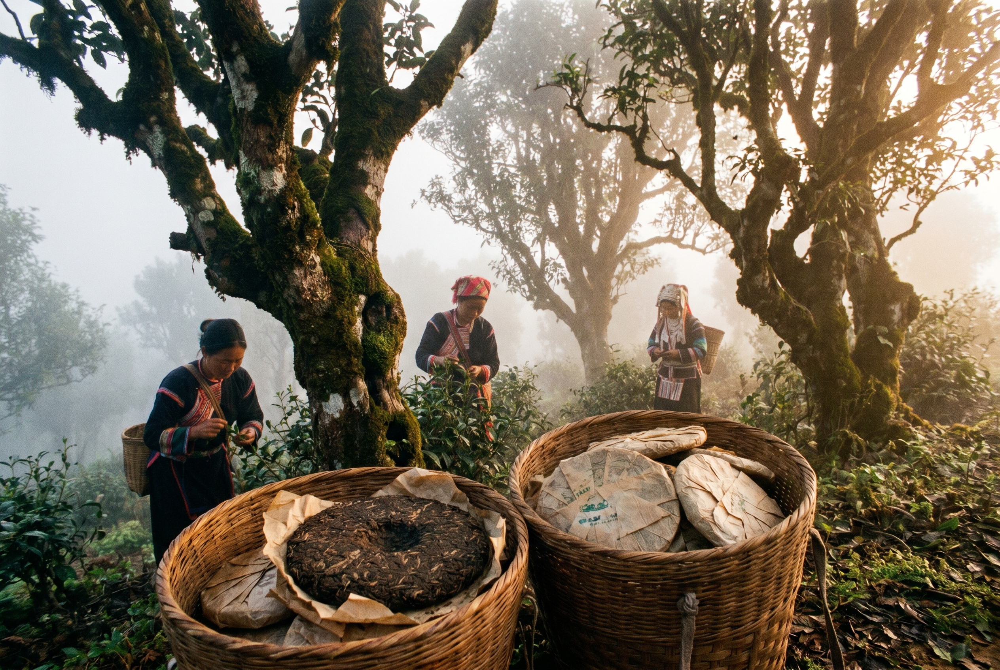
最早在澜沧江两岸种茶的，是濮人——布朗族和德昂族的先祖。据布朗族口述史，茶祖叭岩冷在景迈山种下第一棵茶树的时间，约在公元前 180 年。当时茶不是饮料，而是祭品和药物。濮人发现咀嚼茶叶能提神醒脑、缓解腹泻，于是开始有意识地栽培和管理茶树。这种"林下茶园"模式延续至今——不砍掉森林种茶，而是让茶树在大树的庇荫下生长，与乔木、灌木、苔藓共生。这不仅是一种种植技术，更是一种"人不必征服自然"的哲学。
唐代，茶叶贸易开始规模化。但真正让普洱茶成为"政治经济工具"的是清代。雍正年间在思茅（今普洱市）设"普洱府"统管茶叶贸易和税收，古六大茶山（攸乐、革登、倚邦、莽枝、蛮砖、易武）被纳入官方管理体系。乾隆朝更将普洱茶列为贡品——每年必须向朝廷进贡定量的"金瓜贡茶"和"七子饼茶"。
"七子饼茶"这个名字本身就暗藏政治经济密码。"七子"不是美好寓意，而是税制单位——清代规定，每筒茶以七饼为一个计税单位（一筒），方便在漫长的茶马古道运输中清点和交税。一个商业包装单位，最终变成了文化符号。
如果说历史讲的是茶的权力，那么工艺讲的就是茶的美学。你们在麻黑寨和景迈山品到的是生茶——晒青毛茶的原始形态。一片叶子从树上到杯中，经历了采摘、萎凋、杀青、揉捻、晒青、压制六个步骤，每一步都是手艺人与自然的对话。杀青时，炒锅温度 200-220°C，制茶师用双手直接翻炒叶片，凭手掌感受的温度判断火候——"手温"是老师傅几十年经验的凝结，无法量化，只能传承。揉捻的力道决定了茶汤的浓度和口感：揉重了，茶汤浑浊；揉轻了，滋味寡淡。晒青是最后的点睛——云南高原的紫外线和干燥空气赋予了普洱茶独特的"太阳味"，这是机器烘干无法复制的。
麻黑茶的"蜜香"是另一个美学谜题。那种如蜂蜜般的甘甜尾韵，并非来自茶树本身，而是来自微生物——古茶树上附着的特定菌群在加工过程中参与发酵，产生了独特的风味化合物。不同山头、不同海拔、不同朝向的茶树，附着的菌群不同，因此"一山一味"。这是微生物的艺术，也是不可复制的地理密码。
2007 年的普洱茶金融泡沫是这片叶子最戏剧性的现代篇章。从 2005 年开始，普洱茶被作为"可以喝的古董"炒作——越老越值钱的逻辑吸引了大量投机资金，一饼 357 克的老班章从几百元飙升到几万元。2007 年 4 月，泡沫崩盘，价格一夜跌去 60-70%，无数人血本无归。至今，走在易武老街的茶行里，你仍能感受到那场金融地震的余波——有人因此发家，有人因此破产，而茶树依旧在山上安静地发芽。
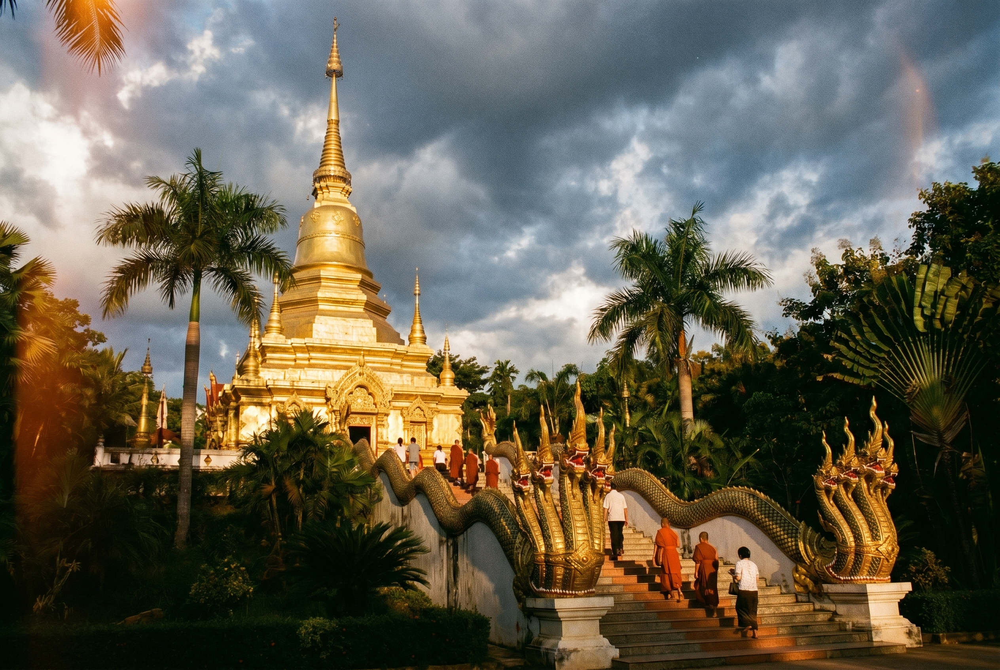
南传佛教（上座部佛教）的传播路线是一条漫长的弧线：从印度阿育王时期（公元前 3 世纪）出发，经斯里兰卡传至缅甸，再从缅甸经掸邦传入云南傣族地区。这条路线与汉传佛教（经丝绸之路从西域进入中原）和藏传佛教（从印度经尼泊尔进入西藏）形成了三条截然不同的传播通道。三者在教义、仪轨、建筑上的差异巨大：汉传尚大乘、建庙宇殿堂；藏传融密宗、起喇嘛塔寺；南传守原始教义、筑金塔竹寺。
傣族的政治体系曾经是一种"政教合一"的结构。最高统治者叫"召片领"（意为"广大土地的主人"），既是世俗君主，又是佛教的最高护法。每个傣族男子在 7-14 岁时必须到寺庙出家为僧，学习傣文、佛经和基本知识——这实际上是一种义务教育制度，只是教室在寺庙里。学成还俗后，才算成年人，有资格娶妻成家。总佛寺就是这个体系的中心。
总佛寺的建筑语言值得细读。重檐屋顶不只是为了防雨——层叠的屋檐象征佛教宇宙观中的"三十三天"（忉利天），每一层代表一重天界。屋脊上的龙形装饰叫"Naga"（那伽），是印度教和佛教共有的蛇形神灵——相传佛祖在菩提树下冥想时，七头蛇王目支邻陀用身体为他遮风挡雨。因此 Naga 成为了佛寺建筑中最常见的守护符号。台阶两侧的蛇形栏杆、屋脊上的翘角、甚至大门的门楣，都能找到 Naga 的身影。
贝叶经是南传佛教最独特的文化遗产。制作一部贝叶经的过程本身就是一种修行：首先采集贝多罗棕榈树的叶片（这种棕榈在版纳有分布），水煮软化后压平阴干，裁成长条形页片。然后用铁笔在叶面上逐字刻写傣文经文——不是写，是"刻"，每一笔都需要力度均匀，稍有不慎就会刺穿叶片。刻完后涂上一层锅底灰或墨汁，再擦去表面多余的墨，让字迹沉入刻痕中显现。最后打孔、穿线、装帧。一部经书可保存五百年以上。
大金塔的比例美学同样暗藏玄机。南传佛教的塔（浮屠/stupa）不是用来登临的，而是用来供奉舍利或象征须弥山的。塔身的比例遵循严格的佛教数理——底座宽高比、塔身收分比、塔刹高度，都有经典依据。告庄大金塔虽是现代重建，但其设计参考了缅甸仰光大金塔的比例系统，底座四面的阶梯分别朝向东南西北，对应四大部洲。夜晚灯光亮起时，金塔倒映在水面——这个构图本身就是佛教"水月观"的视觉化表达：实相与倒影，真与幻，彼岸与此岸。
如果你在总佛寺的壁画前驻足，能看到一种叫"本生故事"的叙事画——讲述佛陀前世的各种故事（佛陀前世曾是鹿、猴、大象、商人、国王）。傣族壁画的风格融合了缅甸和泰国的影响，人物修长优美，色彩鲜艳，线条流畅。每一个故事都是一则寓言，关于慈悲、布施、忍辱——而画师用金粉和矿物颜料将它们固定在寺墙上，供一代一代的善男信女在诵经声中凝视、领悟。
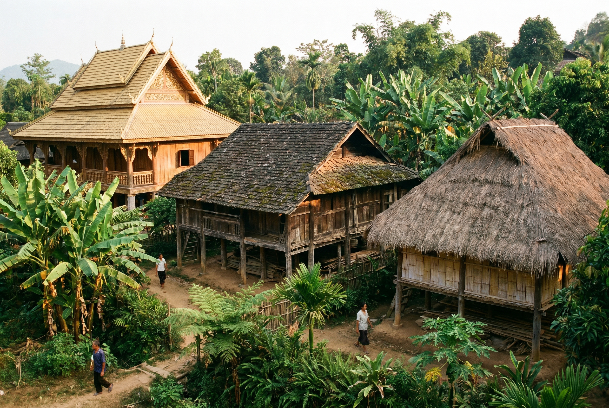
傣族是版纳的"主人"——不仅因为人口最多（约占总人口 34%），更因为他们占据了最好的地理位置：河谷平坝。澜沧江及其支流冲积出的平坦坝区，是版纳最肥沃的农田和最便利的交通节点。傣族沿水而居，种水稻、养鱼、建竹楼，发展出了"水稻文明"的一切特征——精耕细作、集市贸易、文字记录、等级制度。
布朗族占据了坝区之上的半山地带（海拔 1,000-1,800 米）。半山区不适合种水稻，但恰好适合种茶——云雾缭绕、昼夜温差大、土壤偏酸性。布朗族因此成为了中国最古老的种茶民族之一。景迈山的古茶林，正是布朗族先祖叭岩冷在约 2,200 年前开始栽培的。布朗族的生活节奏围绕茶树运转：春天采茶，夏天护林，秋天加工，冬天祭祀。他们信奉万物有灵——蜂神树是他们对自然界最诗意的致敬。
基诺族是三者中最"年轻"的——不是因为历史短（他们的口述史同样追溯到数千年前），而是因为直到 1979 年 6 月，基诺族才被国务院正式确认为中国第 56 个民族。在此之前，他们被笼统地归入"其他民族"。基诺族世居于景洪东北的基诺山，深山密林中交通极为不便，直到 1950 年代才与外界有持续接触。
三个民族的住宅差异，是理解他们与自然关系的最直观窗口。傣族干栏竹楼：底层架空（防潮防蛇防野兽），竹编墙体（通风透光，适应炎热潮湿的坝区气候），木质梁柱上覆金色或红色屋顶（象征佛光和吉祥）。整栋建筑轻盈通透，像一只蝴蝶展翅停在地面上。布朗族木屋：实木承重墙取代了竹编（半山区风大，需要保暖隔风），黑灰瓦片覆盖屋顶（与山林融为一体），屋檐压得很低（抵御山风）。建筑厚重沉稳，像从大地里生长出来。基诺族传统大公房更为独特——一整个大家族（有时多达几十人）住在同一栋长屋里，中间用木板隔出小间，共用火塘。这种集体居住方式反映了基诺族的氏族公社传统。
服饰也是民族身份的密码。傣族女性的筒裙（pha sin）是一块围裹的织锦长布，纹样中最常见的是"孔雀纹"和"菱形纹"——孔雀是傣族的图腾动物，菱形代表稻田。布朗族女性的头巾和挎包使用蜂蜡染布技术——先用蜂蜡在白布上画出图案，再浸入靛蓝染缸，最后煮去蜂蜡，留下蓝底白纹。每一件蜡染作品都是独一无二的，因为蜂蜡在冷却过程中的自然龟裂会产生"冰纹"——这种"美丽的意外"被视为蜡染最迷人的特质。
饮食哲学上，三个民族占据了一条"酸辣光谱"的不同位置。傣族偏酸（酸笋、酸肉、柠檬），布朗族偏苦（苦凉茶、苦笋），基诺族偏辣（辣椒、花椒、蚂蚁蛋拌辣椒）。酸来自发酵（坝区食物容易变质，发酵是保存手段），苦来自山中草药（半山区药用植物丰富），辣来自御寒需要（深山温度低，辣椒素帮助驱寒）。一种口味偏好的背后，是一套完整的生存逻辑。
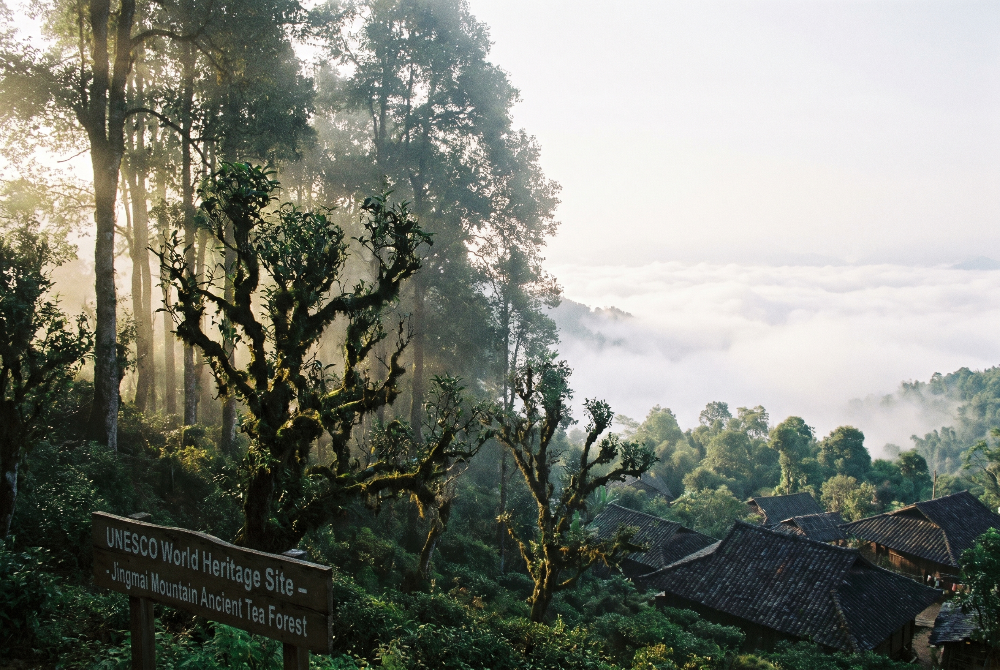
景迈山的申遗之路始于 2010 年。但"以什么身份申报"是第一个难题。自然遗产？景迈山不够野——它是人工栽培的茶林，不是原始森林。文化遗产？它不是建筑或遗址，而是一片活的、还在生产的农业景观。最终的申报类别是"文化景观"（Cultural Landscape）——这是世界遗产中最复杂的类别之一，要求证明"人与自然长期互动的杰出范例"。
申遗过程中最具争议的决策之一是：景迈山核心区至今不铺柏油路。专家论证认为，沥青路面会改变道路两侧的土壤温度和排水模式，可能影响古茶树根系周围的微生物环境——而这些微生物正是景迈茶独特风味的来源之一。这个决策意味着：为了保护"景观完整性"，当地放弃了铺一条能吸引更多游客（也能带来更多收入）的公路。你们开车进山时感受到的颠簸，是这场博弈的直接结果。
布朗族茶祖叭岩冷的传说是申遗叙事的文化支柱。口述史记载，约在公元前 180 年，布朗族首领叭岩冷率领族人来到景迈山，发现此地云雾缭绕、土壤肥沃，于是在森林中种下第一批茶苗。他临终前留下遗训："我留给你们牛马，怕遭灾祸而死绝；我留给你们金银，怕你们花光用尽；我留给你们茶树，让子孙后代取之不尽。"这段话至今刻在翁基古寨的石碑上。
"林下茶园"是申遗成功的技术关键词。景迈山的茶树不是种在开垦过的空地上，而是种在保留了原始乔木的森林里——大树为茶树遮荫（减少直射光，茶叶中氨基酸含量更高），落叶为土壤提供养分（不需要化肥），生物多样性维持了病虫害的自然平衡（不需要农药）。这种"森林-茶树-人"的三层共生结构，被评审委员会认定为"人类与自然和谐共处的杰出范例"——2.8 万亩古茶林，既不是纯自然，也不是纯人工，而是一种介于两者之间的"第三种景观"。
电影《一点就到家》（2020）让更多人知道了景迈山。刘昊然、彭昱畅和尹昉饰演的三个年轻人来到云南山村创业卖咖啡，而"黄路村"的取景地正是翁基古寨和糯干古寨。刘昊然在翁基集市上跑过的那条石板路，彭昱畅站过的那个山坡观景台，至今是打卡点。但电影的深层主题——传统与现代、出走与回归、土地与全球化——恰恰也是景迈山正在面对的真实命题：如何在成为世界遗产后，既保护文化景观的完整性，又让当地居民从旅游业中受益？
翁基古寨的 2,580 年古柏树是这个问题的无声回答。它在叭岩冷种下第一棵茶苗之前就已存在，看着布朗族人来了、种了、繁衍了、被发现了、被参观了。它只是站在那里，用树冠的阴影告诉经过的人：时间的尺度，比任何人的一生都长得多。
| 日期 | 最佳光线 | 推荐机位 |
|---|---|---|
| Day 1 | 21:00 后 | 大金塔水面倒影（告庄人工湖边） |
| Day 2 | 8:00-9:30 | 总佛寺晨光 + 僧人诵经 |
| Day 2 | 15:00-17:00 | 植物园王莲池顺光拍摄 |
| Day 3 | 全天 | 雨林溯溪时逆光拍水花 |
| Day 4 | 16:00-17:30 | 易武老街侧光拍门楣+马蹄印 |
| Day 5 | 17:00-17:45 | 糯干古寨夕阳金顶 |
| Day 5 | 18:30-19:30 | 翁基→景迈大金塔日落 |
| Day 6 | 7:00-8:00 | 翁基观景台晨雾/云海 |
| Day 6 | 18:30-19:30 | 那柯里古镇灯笼亮起后 |
| Day 7 | 17:10-17:55 | 中老铁路车窗风景（靠窗座） |
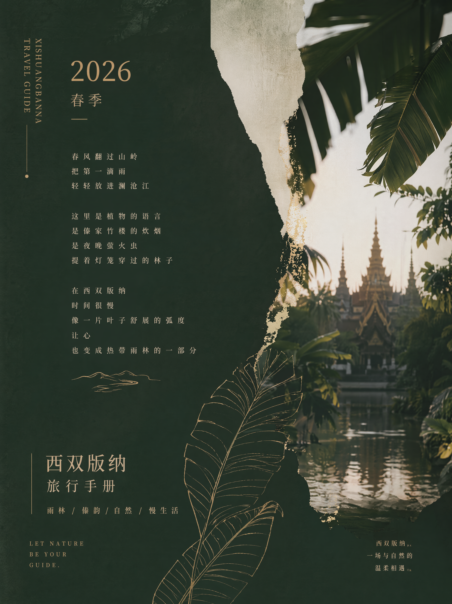